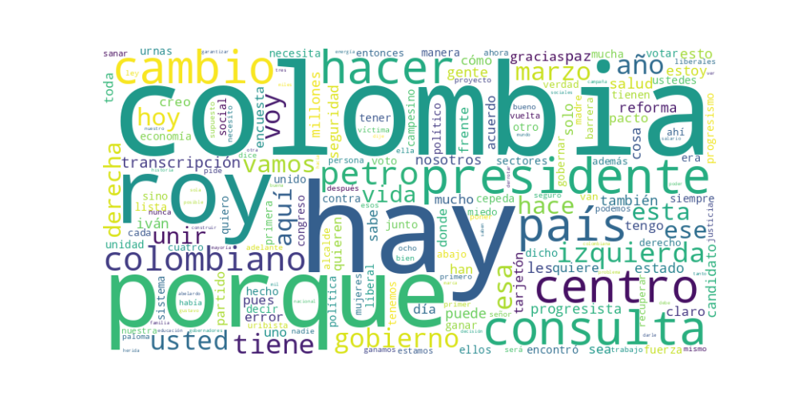

Seguidores: 207,593
1. Perfil de Comunicación: El candidato emplea un estilo de comunicación predominantemente informal y cercano, dirigido a conectar emocionalmente con el ciudadano común. Utiliza un lenguaje coloquial y popular, con frecuentes apelaciones a su historia personal ("vengo de abajo", "hijo de una madre soltera campesina"), lo que busca generar identificación. Aunque aborda temas de Estado, evita un tono excesivamente técnico, prefiriendo explicaciones sencillas y metáforas accesibles (e.g., "conducir el avión del Estado"). La comunicación es directa, a menudo interactúa con críticas específicas y usa plataformas como Instagram para un diálogo más personal y fragmentado, mezclando mensajes políticos con anécdotas y agradecimientos.
2. Temas Principales: * Unidad Nacional y Rechazo a la Polarización: El tema central y más recurrente. Se presenta como la alternativa de "centro" que puede "unir y sanar" a un país fracturado entre extremos. Ejemplo: "Los colombianos no quieren estar condenados al radicalismo ni a los extremos... mi propósito ha sido y será unir y sanar". * Seguridad y Salud: Presentados como dos caras de la misma moneda: proteger la vida. Aborda la seguridad con un discurso de "mano firme" legítima del Estado y la salud desde su experiencia como médico y autor de la ley estatutaria. Ejemplo: "Un gobierno tiene sentido si protege la vida. Y yo, como médico, me he pasado la vida salvando vidas". * Reactivar la Economía y Generar Empleo: Vincula la superación de la deuda social a la generación de riqueza y productividad. Propone reactivar sectores como construcción, agroindustria y turismo. Ejemplo: "Hay que generar riqueza, hay que generar empresa... no hay con qué pagar la deuda social a punta de subsidios". * Defensa del Acuerdo de Paz y las Víctimas: Se enmarca como un defensor histórico de la paz, la JEP y las víctimas, contrastándose con la "derecha negacionista". Ejemplo: Recordar que firmó los acuerdos y acusar a la oposición de querer "hacer trizas la paz". * Reforma Agraria y Apoyo al Campo: Vinculado a su historia personal y al acuerdo de paz. Habla de soberanía alimentaria, apoyo al campesino y desarrollo agroindustrial. Ejemplo: "Sin campesinos no hay patria, no hay futuro".
3. Tono y Sentimiento Dominante: El tono dominante es propositivo y de urgente conciliación, pero con una base de crítica fuerte hacia lo que percibe como los "dos extremos" (la izquierda radical y la derecha uribista). Es un tono de confrontación dialéctica, no violenta, donde se presenta como el único con la experiencia y capacidad para resolver problemas ("yo sé lo que hay que hacer"). Hay un sentimiento de esperanza condicionada a la unidad y un rechazo visceral al "sectarismo" y la "polarización". También muestra un tono de resistencia y resiliencia, apelando a su propia biografía como ejemplo de superación contra pronósticos adversos.
4. Palabras Clave de Poder: * Unir / Unidad / Unión: La palabra más repetida, eje de su propuesta. * Sanar / Sana(r) las heridas: Complemento emocional de "unir". * Centro / Centro progresista / Centro liberal: Su autodefinición política estratégica. * Cambio 2.0 / Cambio seguro: Para marcar continuidad pero con estabilidad. * Yo sé (hacer) / Yo lo sé hacer: Afirmación de experiencia y capacidad ejecutiva. * Ganamos todos: Eslogan de cierre inclusivo. * Abajo y en el centro: Posición literal en el tarjetón y metáfora de su origen y postura política. * Consult(a) uribista: Enemigo principal a derrotar en la contienda interna. * Extremos / Radicalismo / Polarización: El mal a erradicar.
5. Conclusión Estratégica: La estrategia de comunicación de Roy Barreras busca posicionarlo como el candidato puente, la única alternativa viable y sensata entre dos proyectos políticos que, según su marco, condenan a Colombia a la fractura y el retroceso. Se dirige deliberadamente al electorado de centro, independiente y progresista no radical que anhela seguridad, eficacia en la gestión pública (salud, economía) y un tono conciliador, pero sin renunciar a los avances sociales del gobierno saliente. Su discurso busca evocar esperanza pragmática, apelando al cansancio de la polarización y ofreciándose como un "médico" experimentado que puede "sanar" al país. La constante referencia a su biografía humilde y de esfuerzo ("el primer taxista presidente") no solo humaniza, sino que fundamenta su narrativa de "unidad desde abajo" y lo presenta como un garante de que el cambio social es posible desde las instituciones.
Reporte de Análisis Estratégico del "Corpus del Éxito" del Candidato Presidencial
El patrón de éxito del candidato se basa en un discurso que combina una empatía activa y concreta con una posición política definida como "tercer camino". No se limita a la emoción o al dato, sino que genera una conexión a través de un liderazgo presentado como operativo, cercano y resolutivo. Los videos exitosos muestran una secuencia clara: identifica un problema (desastre natural, polarización, problemas del campesino), muestra acción o preocupación inmediata, y pivota hacia una propuesta de futuro bajo su liderazgo. Es la fórmula del "Estoy aquí, entiendo el problema, ya estoy actuando y tengo el plan para solucionarlo a fondo".
El lenguaje apunta a una audiencia amplia, cansada de la polarización y con anhelo de eficiencia gubernamental. Se dirige tanto a su base progresista (con menciones a la paz y al campo) como al votante indeciso de centro que valora la gestión concreta sobre la ideología pura. También busca a los jóvenes y sectores urbanos desencantados con la política tradicional, ofreciendo un discurso de "hechos, no palabras". Su tono no es académico ni excesivamente informal; es directo, seguro y orientado a soluciones.
La clave fundamental de su poder discursivo es la hibridación de la emoción con la acción ejecutiva. Mientras los discursos políticos tradicionales suelen separar la empatía (emocional) de la gestión (técnica), este candidato las fusiona. No solo "se duele" de las víctimas, sino que "ya se comunicó con las autoridades". No solo promete un futuro mejor, sino que enumera logros pasados como garantía. Construye una imagen de autoridad competente y cercana, presentándose no como un político más, sino como un gerente o un "solucionador de problemas" para la nación. Su poder radica en transitar del "yo siento lo que tú sientes" al "yo ya estoy haciendo algo al respecto, y tengo el plan para que no vuelva a pasar".

Caption: Esta temporada de lluvias ha damnificado a miles de familias colombianas en la costa Caribe, en Córdoba, Sincelejo y Cartagena. Les aseguro que después de la tormenta vendrá la calma. A las familias afectadas les mando un mensaje de aliento. Hemos activado nuestras redes de ayuda solidaria para acompañarlas en este momento difícil.
Likes: 12,038 | Comentarios: 35 | Reproducciones: 94,548
Ver en InstagramCaption: Sin campesinos no hay patria, no hay futuro…
Likes: 193 | Comentarios: 26 | Reproducciones: 3,291
Ver en InstagramCaption: Los colombianos no quieren estar condenados al radicalismo ni a los extremos. No quieren que el país se fracture ni se divida. Ya tuvimos suficiente de eso… Por eso, mi propósito ha sido y será unir y sanar.
Likes: 141 | Comentarios: 54 | Reproducciones: 2,442
Ver en Instagram